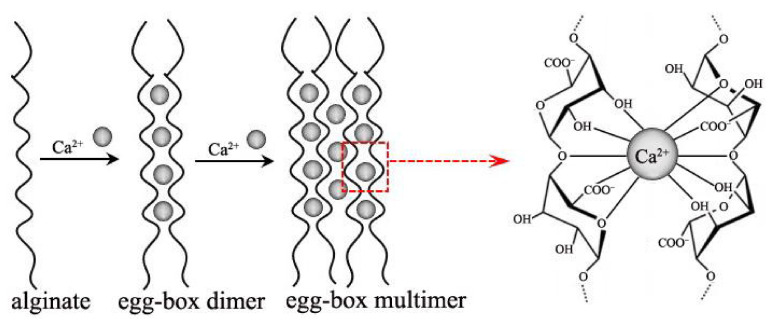

알긴산나트륨 (Sodium Alginate)
검수 완료

| # | 원문 | 한국어 |
|---|---|---|
| 1 | alginate | 알긴산 |
| 2 | Ca2+ | 칼슘이온 |
| 3 | egg-box dimer | 달걀상자 이합체 |
| 4 | egg-box multimer | 달걀상자 다합체 |
| 5 | COO− | 카복실산 이온 |
| 6 | OH | 수산기 |
쉽게 풀면
알긴산나트륨은 갈조류의 세포벽에서 추출한 천연 고분자 물질로, 물에 녹으면 점성이 있는 끈적한 용액이 된다. 이 물질의 가장 큰 특징은 칼슘이온과 만나면 즉시 젤리처럼 굳는다는 점인데, 이는 알긴산 사슬 사이에 칼슘이온이 다리를 놓아 그물망 구조를 만들기 때문이다. 이 성질을 이용해 알긴산나트륨 용액을 염화칼슘 용액에 방울방울 떨어뜨리면 작고 동그란 젤 구슬(비드)이 만들어진다. 식품에서 캐비어 모양의 인공 알갱이를 만드는 분자요리 기법에도 쓰일 만큼 친숙한 원리이다.
왜 중요한가
세포나 효소, 약물을 젤 비드 속에 가두어 보호하고 서서히 방출시키는 캡슐화 기술의 핵심 재료로서 세포배양, 약물전달, 조직공학 연구에서 널리 활용되며, 생체적합성이 높아 다양한 생명공학 실험에 적합하다.
무엇이고 어디서 작용하나
- 알긴산은 갈색 해조류에서 얻는 식용 다당류이다. 상업적으로는 주로 자이언트 켈프(Macrocystis pyrifera), Ascophyllum nodosum, 다시마속(Laminaria)에서 얻고, Pseudomonas와 Azotobacter 세균도 만든다.
- β-D-만누론산(M)과 α-L-굴루론산(G)이 (1→4) 결합한 선형 공중합체이다. 단위가 G-블록, M-블록, 교대 MG-블록으로 배열된다.
- 알긴산의 식품첨가물 번호는 E400이다.
주요 기능과 기전
- 칼슘 이온이 사슬 사이를 가교하면 알긴산이 겔을 이룬다. 알긴산나트륨 용액에 칼슘염을 넣으면 온화한 수용액 조건에서 하이드로겔이 생긴다.
- 식품에서는 알긴산나트륨(E401)이 음료·아이스크림의 점도를 높이고 젤리를 굳히며 소시지 케이싱을 만든다.
- 치과 인상재, 위산 역류를 막는 제산제(Gaviscon), 칼슘 알긴산염 상처 드레싱에도 쓴다.
연구에서 다루는 방식
- 알긴산은 독성이 없고 생체적합성이 있으며, 분해 산물은 신장으로 쉽게 배출된다고 설명된다. 식품 등급은 가공식품에 쓰도록 승인되어 있다.
- 실험에서는 비드 제조용 용액의 농도와 칼슘 용액 농도를 조건으로 기록하고, 같은 로트의 시약을 쓴다.
- 지속적으로 열을 가하면 구조가 불안정해지거나 파괴될 수 있다.
논문에서는 이렇게 쓰입니다
예시 문장
아래 예문은 용어의 쓰임을 보이려고 만든 것으로, 실제 논문 문장이 아니다.
효소를 젤 알갱이 속에 가두어 재사용할 수 있게 만들었다는 뜻이다.
젤 알갱이의 단단함과 그 안 세포의 생존 여부를 확인했다는 의미이다.
조금 더 깊게 보면
알긴산나트륨이 칼슘이온과 만나 겔화되는 원리는 흔히 '달걀상자 모델(egg-box model)'로 설명되는데, 알긴산 사슬의 굴루론산 부분이 칼슘이온을 사이에 두고 규칙적으로 배열되면서 안정한 3차원 그물 구조를 형성한다. 이 겔은 킬레이트제(EDTA 등)를 넣으면 칼슘이 빠져나가면서 다시 풀어지는 가역적 특성도 있다. 갈조류에서 추출되는 다당류로, 식품 산업에서는 증점제·안정제로, 상처 드레싱 소재로는 삼출물을 흡수하는 특성이 활용된다.
주의할 점
천연물 유래로 독성은 낮지만 원료의 순도나 점도 편차가 배치마다 다를 수 있어 실험 재현성을 위해 동일 로트 사용이 권장되며, 용액이 매우 점성이 높아 취급 시 균일하게 녹이는 데 시간이 걸릴 수 있다. 가루 상태로 흡입하지 않도록 주의해야 하며, 물에 서서히 넣어 덩어리 지지 않게 저어야 한다.
참고 문헌
- Wikipedia contributors. (n.d.). Sodium alginate. Wikipedia.
- 위키백과 기여자. (n.d.). 알긴산. 위키백과.